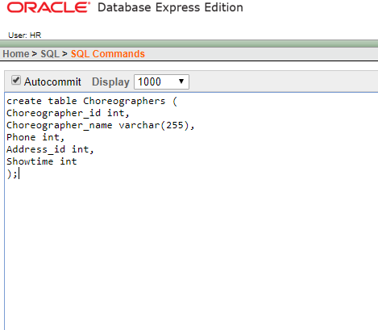
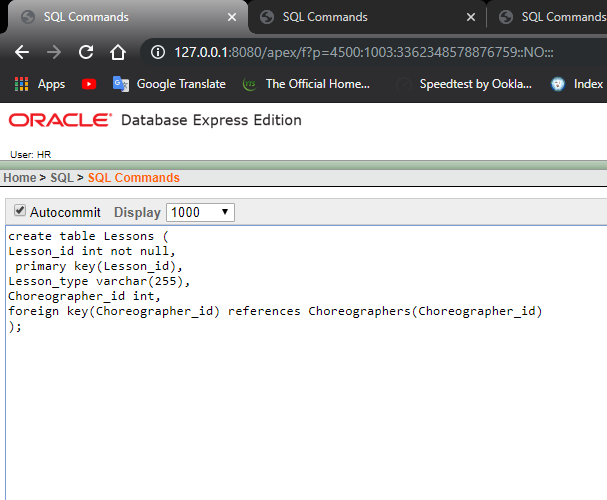
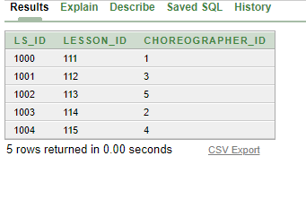
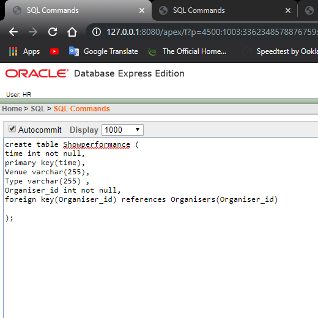

Oracle SQL database designed to manage instructors (choreographers), lessons, and performance schedules, using primary/foreign keys and a junction table to model relationships.
What I did
CREATE TABLE
SELECT
Skills / Tools
Oracle SQL • Oracle APEX • Data Modeling • ERD Design • Relational Database Design • DDL (CREATE / ALTER) • Primary & Foreign Keys • Junction Table (Many-to-Many) • SQL Queries (SELECT) • Normalization
GitHub
SQL-oracle-DanceAcademy-DB-aiub
Screenshots




Console-based pet shop management system built in Java to practice OOP principles (inheritance, interfaces, encapsulation) and file I/O for maintaining a simple transaction history.
Pet
Cat
Dog
PetOperations
PetShopOperations
PetShop
FileReadWriteDemo
History.txt
Start.java
Java • OOP • Inheritance • Interfaces • Encapsulation • File I/O • Console application design • Debugging
aiub-oop-petshop
A public C++ solutions repository focused on correctness, edge-case handling, and refactoring. The code demonstrates structured problem-solving with validation, clean logic, and test-case driven checks.
assert
C++ • OOP Design • Debugging • Refactoring • Test-case Design (assert) • Exception Handling • Edge-case Analysis • Performance Awareness
WorkCpp